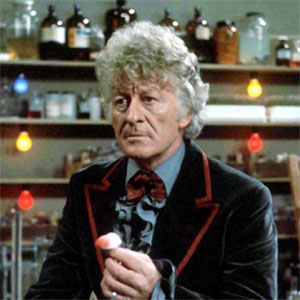

| Home, The Doctors, Companions, Villains | |||||||||||||
 |
|||||||||||||
|
The Third DoctorJon PertweeThe Third Doctor is the third incarnation of the protagonist of the long-running BBC television science fiction series Doctor Who. He was portrayed by actor Jon Pertwee. Within the series' narrative, the Doctor is a centuries-old Time Lord alien from the planet Gallifrey who travels in time and space in his TARDIS, frequently with companions. When the Doctor is critically injured, his body can regenerate; as a result, his physical appearance and personality change. Pertwee portrays the third such incarnation, a dapper man of action of stark contrast to his wily but less action-oriented predecessors. His adventures often fitted into the spy-fi genre which had been popularised by The Avengers the decade prior. Within the story, the Third Doctor came into existence as part of a punishment from his own race, the Time Lords, who forced him to regenerate and also disabled his TARDIS.
|
||||||||||||